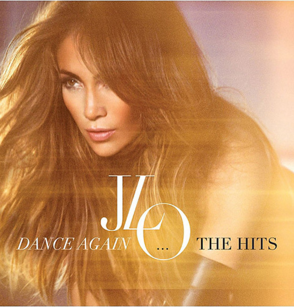

Michael Jackson
El Rey del pop

Nació el 29 de agosto de 1958 en Gary, Indiana.Séptimo hijo de Katherine Esther Scruse y Joseph Walter Jackson,
un trabajador de una industria metalúrgica.Fue criado como Testigo de Jehová por su madreA los cuatro años Michael
cantaba profesionalmente y con cinco formó parte del grupo de sus hermanos, conocido como los Jackson Five.
En 1968 firman con Motown Records y toda la familia se muda a Los Ángeles, California.
Con el patrocinio de Berry Gordy's, se hicieron famosos gracias a sus discos (editados por Motown) vendieron 8 millones
de ejemplares. Su primer álbum Got to Be There (1971), le dio fama como artista en solitario. Michael Jackson representó
el papel de Espantapájaros en la película musical The Wiz (1978) y grabó el disco Off the Wall (1979) con varias
composiciones suyas.Thriller (1982), el vídeo del tema que daba nombre al álbum, revolucionó la industria, porque duraba
más minutos de lo normal y en él aparecía el rey del pop convertido en zombie y hombre lobo. De los nueve temas que
forman el disco, siete fueron singles, como "Billie Jean", "Beat it" o el dúo con Paul McCartney "The Girl is mine", y
siete también estuvieron entre los diez primeros del Billboard americano, ganó ocho Premios Grammy y se convirtió en el
disco más vendido de la historia.
Mayores Exitos
Madonna
La Reina del pop
 Trabajó en Broadway con una obra de teatro titulada 'Speed the Plow', con notable éxito. Junto a Sean Penn
(con el que se casó el 16 de agosto de 1985) protagoniza una nueva película, 'Shangai Surprise', que resultó un fracaso.
En 1988 edita 'Who's that girl' y a continuación 'You can dance'. Inicia una nueva gira con gran éxito. Reconocida
mundialmente por la provocación que han despertado sus video-clips y espectáculos así como por la versatilidad de sus
shows En 1990 protagoniza la película 'Dick Tracy', junto a Warren Beatty, con quien tuvo un romance, también publica la
banda sonora de 'Dick Tracy'. En 1992 se pone a la venta 'Erotica' y en 1994 'Bedtime Stories', con el que da un giro a
su carrera además de lograr un gran éxito de ventas. En 1996 protagoniza 'Evita', junto a Antonio Banderas, con la que
logra el Globo de Oro a la mejor actriz. Edita el disco con la banda sonora de la película y en octubre del mismo año
nace su hija Lourdes María Ciccone, fruto de su relación con el cubano Carlos León. En 1998 aparece "Ray of Light" y en
el 2000 "Music".
Trabajó en Broadway con una obra de teatro titulada 'Speed the Plow', con notable éxito. Junto a Sean Penn
(con el que se casó el 16 de agosto de 1985) protagoniza una nueva película, 'Shangai Surprise', que resultó un fracaso.
En 1988 edita 'Who's that girl' y a continuación 'You can dance'. Inicia una nueva gira con gran éxito. Reconocida
mundialmente por la provocación que han despertado sus video-clips y espectáculos así como por la versatilidad de sus
shows En 1990 protagoniza la película 'Dick Tracy', junto a Warren Beatty, con quien tuvo un romance, también publica la
banda sonora de 'Dick Tracy'. En 1992 se pone a la venta 'Erotica' y en 1994 'Bedtime Stories', con el que da un giro a
su carrera además de lograr un gran éxito de ventas. En 1996 protagoniza 'Evita', junto a Antonio Banderas, con la que
logra el Globo de Oro a la mejor actriz. Edita el disco con la banda sonora de la película y en octubre del mismo año
nace su hija Lourdes María Ciccone, fruto de su relación con el cubano Carlos León. En 1998 aparece "Ray of Light" y en
el 2000 "Music".
Mayores Exitos
Britney Spears
Princesa del pop

Durante su infancia recibió clases de canto y ganó varios concursos a nivel estatal. Debutó como cantante a los cinco
años, cantando " What Child Is This? Cuando apenas contaba 8 años de edad se presentó a una prueba para El Club Mickey
Mouse en Atlanta. La directora de casting Matt Casella la rechazó por ser demasiado joven para unirse a la serie, aunque
le presentó a Nancy Carson, agente de talentos de Nueva York, que sugirió su ingreso en la Performing Arts School
Profesional Se trasladó a Nueva York junto a su familia, donde alquilaron un apartamento y durante tres años estudió
danza e interpretación y participa en la grabación de anuncios para la televisión.
En diciembre de 1992, fue finalmente contratada para El Club de Mickey Mouse (donde conoció a su futura pareja sentimental
, Justin Timberlake), pero regresaron a Kentwood después del show fuera cancelado dos años después. Se matriculó en la
Academia Parklane en McComb.Reconoce a Madonna, Janet Jackson yWhitney Houston como sus principales influencias. En 1997,
formó parte de un grupo femenino llamado Innosense. Con quince años se presentó a una prueba de selección para un grupo
de chicas, lo que sirvió para que un productor se fijara en ella y diera pie a su carrera en solitario. En 1999 publicó
su primer álbum, Baby One More Time que se convirtió en el disco más vendido, con el sencillo más escuchado en la semana
que debutó.El video fue filmado en la Venecia High School, que fue la misma escuela donde se rodó la película 'Grease'.
Al año siguiente el segundo, titulado Oops!.. I Did It Again. La revista Forbes la citó como una de las artistas que más
dinero ganó en 1999, con una cifra aproximada de $15 millones de dólares, incluidos sus anuncios con Clairol y Polaroid
Mayores Exitos
Belinda Carlisle
Sus comienzos fueron en un grupo llamado “Go-Go´s”, aunque, como la música que tocaban era de género por, Belinda pronto
lo abandonó para probar suerte en solitario. Era el año 1985.Pronto fue contratada por la discográfica “I.R.S. Records”,
con la que en 1986 publicó el álbum “Belinda”, que contenía su tema "Mad About You”. El éxito fue considerable, siendo
bien acogido tanto por la crítica como por el público. Con este trabajo la cantante empezó a despuntar ya en el
programa musical.Además, algunas de las canciones de la cantante fueron elegidas para formar parte de diferentes bandas
sonoras de películas como Mannequin” o “Dancing in the City”.El segundo álbum, Heaven on Earth”, vendría en el año 1987.
Con él, Belinda consigue triunfar tanto en Australia como en el Reino Unido, siendo además nominada para los Premios Grammy.
Más o menos por estas épocas, la cantante se casó con Morgan Mason, hijo del actor James Mason, que también era actor, y con
el que tuvo un hijo.Belinda, aunque no dejó de lanzar álbumes al mercado, a partir del nacimiento de su hijo dedicaba mucho
tiempo a su vida familiar. Aún así, en 1996, por ejemplo, lanzó su álbum “A woman & a man”, trabajo que fue muy bien acogido,
no solamente en el Reino Unido sino también por toda Europa.Después, la cantante decidió hacer un parón en su carrera para dedicarse
por completo a su familia, y no volvió a la escena musical ya hasta el año 2007, en que saca su nuevo álbum “Voilà”.
Mayores Exitos
Jennifer Lopez

Jennifer Lopez ó J. Lo, como también se la conoce, como bailarina, actriz y cantante ha conseguido fama mundial, consiguiendo muchos premios y distinciones.
En todos estos años ha recibido varios premios de MTV Video Music Awards, American Music Awards, Grammy Awards, MTV Europe Music Awards y Latin Music Awards.
Ha grabado ocho discos de larga duración, el último Love?, en 2011. Su filmografía es muy abundante, ha participado en más de veinticinco películas y más de
treinta videoclips.Para la televisión ha participado en el show In Living Color y como actriz en Second Chances, Will y Grace y en un capítulo de Como conocí
a vuestra madre en el año 2010. ha conseguido con sus primeros siete discos vender más de 65 millones de copias en todo el mundo. Desde el inicio hasta el año
2010 ha tenido contrato con la discográfica Epic Records y desde 2010 hasta la actualidad con Island Records.
Mayores Exitos
Paulina Rubio

En su país natal, se dio a conocer en 1981, con el grupo infantil Timbiriche, en el que estuvo una década, convirtiéndose en el grupo de pop latino más importante de los años 80.
A principios de los 90, comienza su carrera en solitario, es contratada por la compañía discográfica EMI Music, grabando cuatro álbumes de estudio, "La Chica Dorada", "24 Kilates",
"El Tiempo es Oro" y "Planeta Paulina", con un gran éxito en su país y en el resto de América Latina.Después de rescindir el contrato con EMI Music, pagando una cantidad muy
elevada de dinero, comienza a trabajar con el sello Universal Music Group.Con Universal publica "Paulina" (2000), Border Girl (2002), con los que consigue conquistar al público
de Estados Unidos y Europa, logrando millones de ventas en todo el mundo.Posteriormente salen al mercado "Pau Latina" (2004), "Ananda" (2006), "Gran City Pop" (2009) y su último
album, hasta la fecha, "Brava!" (2011).Ha realizado nueve giras repartidas por el continente Americano, Europa y Asia.De los 35 sencillos que ha publicado, 14 han estado en las
listas de éxitos en México. Con "Ni una sola palabra" consigue triple disco de platino en España.Los premios que ha recibido son innumerables, ACE, ERES, Juventud, Grammy, TVyNovelas
, Orquidea de Diamante, Latin Billboard, Ondas, Oye!, Tu Música, Viña del Mar, Micrófono de Oro, MTV, Telehit, etc.
Mayores Exitos
Shakira
Cuando tenia trece años, un representante de Sony Music le consigue su primer contrato discográfico. En el año 1991 Shakira debuta con el álbum, 'Magia', publicado únicamente
en Colombia y gracias a este trabajo es elegida para representar a su país en el Festival de la OTI en España, aunque no pudo participar en el certamen por no contar con la
edad mínima, que era de dieciséis años.En 1993 Shakira lanza 'Peligro', su segundo disco y aparece como actriz en una teleserie llamada 'El Oasis', en Caracol Televisión.
Su tercer álbum, 'Pies descalzos' (1996), vendió más de cuatro millones de copias en todo el mundo y dio inició a un gira mundial que duró dos años. En 1998 aparece ¿Dónde
están los ladrones? que compuso tras ser robadas en un aeropuerto todas las canciones que había compuesto para un disco nuevo.Shakira publicó dos elepés en 2005: uno en español,
'Fijación oral vol.1', y otro en inglés 'Oral fixation vol.2'. Fijación oral Vol. 1 fue lanzado en el mes de junio de 2005 en Europa, Norteamérica, Australia y Latinoamérica.
El disco llegó al primer lugar de ventas en México, Colombia, Argentina, España y varios países de Latinoamérica. El 28 de agosto de 2005, se convirtió en la primera cantante
en interpretar un tema musical en español durante la ceremonia de los MTV Video Music Awards, celebrados en Miami, Florida.Con la colaboración del cantante español Alejandro
Sanz interpretó 'La Tortura'. El 28 de febrero fue galardonada con su segundo Grammy anglosajón en la categoría de Mejor Álbum Rock Latino.
Mayores Exitos